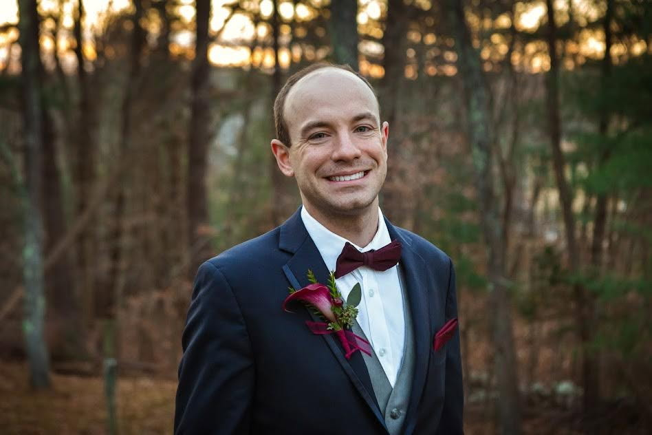

Trust & Safety • Fraud Strategy • Risk Operations
Outside of work, my greatest priority is my family. I enjoy spending time exploring National Parks, traveling, and creating lasting memories with my daughters. Those experiences have taught me patience, curiosity, and problem-solving—qualities that also shape my professional approach to Trust & Safety and fraud prevention.
Trust & Safety professional with over 10 years of experience leading fraud investigations, operational improvements, and risk management initiatives. Experienced in SQL, fraud detection, automation, and cross-functional collaboration to improve customer safety while reducing operational costs.
Bridgewater State University
Wheaton College
Interested in learning more?
Download My Resume (PDF)Email: matthewcarvell@gmail.com
Phone: 339-788-7158